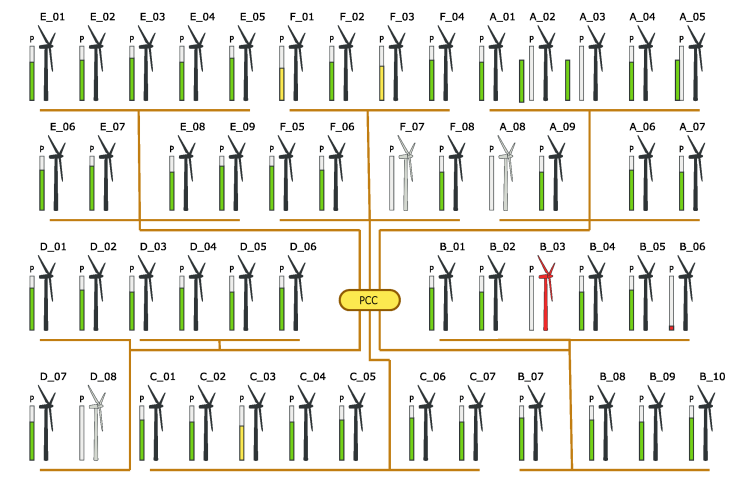
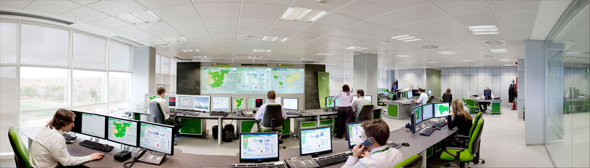

En un Parque Eólico existe un Centro de Control (generalmente en un edificio situado estratégicamente en el territorio donde se despliega el Parque), desde donde se monitoriza el estado de los Aerogeneradores y se comanda su puesta en marcha y paro, la potencia máxima a generar y la potencia reactiva. Una parte fundamental de dichas operaciones se realizan a través de un Sistema de Monitorización y Control (SCADA) (Supervisory Control And Data Adquisition), que tiene un canal de comunicaciones con todos y cada uno de los Aerogeneradores del Parque. Su misión, sin embargo, no es la de mantener el funcionamiento de cada uno de los componentes de cada uno de los Aerogeneradores: los Aerogeneradores pueden asimilarse a Plantas de Producción Independientes, capaces de funcionamiento autónomo.
A través de Los SCADAs se realizan funciones de:
•recogida de los datos operacionales de los Aerogeneradores, para su almacenamiento y análisis,
•el control remoto de los Aerogeneradores, entendiéndose éste como capacidad para dar ordenes básicas de "Arranque" y "Parada", y dependiendo de los aerogeneradores, capacidad para cambiar determinados parámetros operativos (p.e., potencia activa máxima, potencia reactiva, etc.)
Generalmente, el parque eólico entrega su producción de acuerdo con determinadas condiciones contractuales. Estas condiciones incluyen, básicamente, cuanta potencia activa y cuanta reactiva se comprometen a entregar. Con el sistema SCADA se pueden realizar las operaciones que garanticen los compromisos adquiridos, tomando en cuenta las operaciones de mantenimiento de la planta.
Para ello, el SCADA recibe datos también de sistemas externos que predicen el viento. Basándose en estas predicciones, se determina las condiciones de producción, generalmente hechas por la entidad operadora de la transmisión en la Red Electriza (TSO : Transmission System Operator).
Como consecuencia, existe un cuadro de mando básico en el SCADA se muestra en la siguiente fig 1.
 Fig 1
Fig 1
En este gráfico se presenta la previsión del viento (en azul), la previsión de la demanda (producción requerida) (en verde), juntamente con la evolución real del viento hasta el momento actual (en naranja) y la producción generada hasta el momento actual (en rosa). Este es el cuadro de mando básico del Parque Eólico.
Puede apreciarse que el valor de la demanda prevista cambia y se mantiene estable en periodos de aproximadamente 15 minutos. Este parámetro es parte del acuerdo con el Sistema de Transmisión.
También puede apreciarse que la producción generada se ajusta con bastante precisión, en promedio, a la demanda prevista.
Por otro lado, el sistema SCADA tiene un sinóptico donde se puede apreciar de forma gráfica, y rápidamente, el estado de cada uno de los aerogeneradores del parque. Tal como se muestra en la siguiente figura.

Fig 2.Se suele también indicar el cableado de potencia entre los aerogeneradores y el PPC (Punto de Conexion Común o Point of Common Connection, en inglés), donde se produce la conexión a la Red Eléctrica.
Las empresas que gestionan un gran número de parques eólicos disponen de Centros de Control adicionales, también basados en sistemas SCADA, que reciben y agregan la información de los SCADAs en los parques. La siguiente foto muestra una de estas instalaciones.
